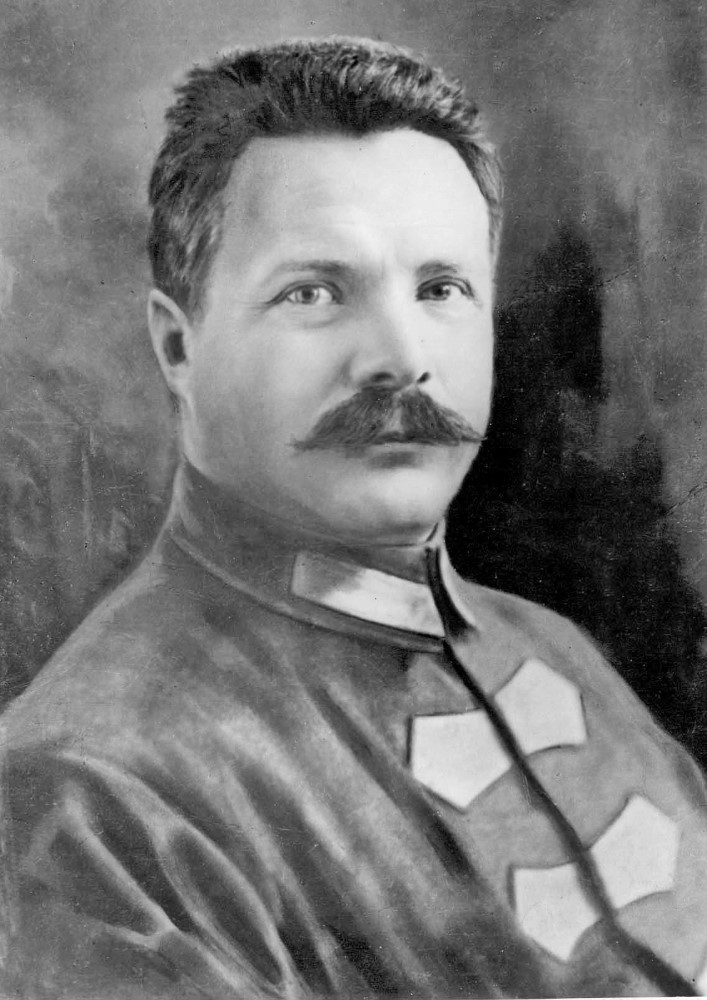

20 июня 1918 года постановлением коллегии при народном комиссаре по внутренним делам была утверждена Иваново - Вознесенская губерния с центром в городе Иваново - Вознесенске. В состав губернии помимо современной территории вошли Ковровский, Суздальский, Вязниковский уезды (ранее Владимирская губерния); Нерехтский и Макарьевский уезды (ранее Костромская губерния).


Первым губернатором новообразованной губернии стал Михаил Васильевич Фрунзе
М. В. Фрунзе родился в 1885 в г. Бишкек. Руководил Иваново-Вознесенкой всеобщей стачкой текстильщиков (май-июль 1905 года), участовал в Декабрьском вооруженном восстании 1905 года. Около 20 лет находился на каторжных работах в разных точках Союза. В первой половине 1918 года становится преседателем Иваново-Вознесенского губернского комитета РКП(б). С 1918 года - военный комиссар Ярославского военного округа. В феврале - мае 1919 года - командующий Четвёртой Армией РККА, в мае - июне - Туркестанской армии. Руководил штурмом Бухары (30 августа - 2 сентября 1920 года)
В январе 1929 года после ликвидации губерний образовалась Ивановская промышленная область. 11 марта 1936 года из состава этого субъекта была выделена Ярославская область, а оставшаяся часть переименована в Ивановскую область. 14 августа из состава Ивановской области выделены Кострмская и Владимирская области.